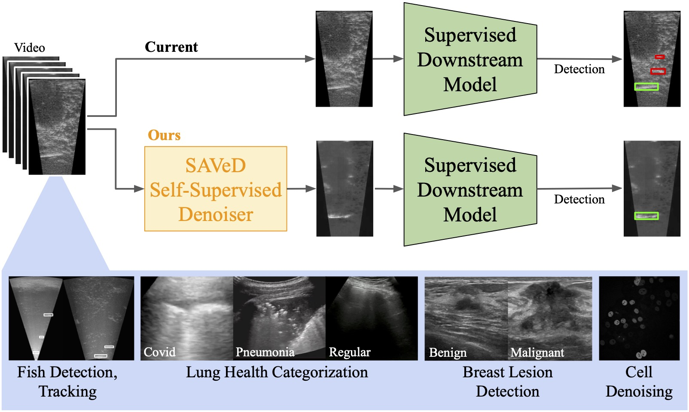

Raw vs. Denoised Frames
Foundation models excel at vision tasks in natural images but fail in low signal-to-noise ratio (SNR) videos, such as underwater sonar, ultrasound, and microscopy. We introduce Spatiotemporal Augmentations and denoising in Video for Downstream Tasks (SAVeD), a self-supervised method that denoises low-SNR sensor videos and is trained using only the raw noisy data. By leveraging differences in foreground and background motion, SAVeD enhances object visibility using an encoder-decoder with a temporal bottleneck. Our approach improves classification, detection, tracking, and counting, outperforming state-of-the-art video denoising methods with lower resource requirements. Our code is available here.
Overview of method and architecture. Our method makes use of denoising autoencoders. We encode 3 sequential frames of a video into their latent representations and pass them through a spatiotemporal bottleneck that compresses the 3 appearance features into a single spatiotemporal feature representation. We then pass this spatiotemporal feature representation through a decoder to reconstruct the target frame. The decoder generates a reconstruction target, which is then compared with the ground-truth reconstruction target. We leverage an L2 loss function to train out model, backpropagating the error across all of the networks in the orange box jointly.
Overview of our reconstruction target. We call our target the positive frame difference with the current frame (PFDwTN). It incorporates spatiotemporal information with the existing frame to exploit/exaggerate the motion of the foreground objects. Positive motion of the next frame is defined as the maximum above-zero difference between the next frame and the current frame, while positive motion from the previous frame is defined as the maximum above-zero difference between the current frame and the previous frame. To handle frames where the background movement does not differ significantly from the foreground objects' motion (i.e. stationary objects), we also include the current frame in the reconstruction target. We find that exploiting the motion signature improves performance on downstream tasks.
SAVeD does well across all datasets and downstream tasks. Best performance is bolded. Baseline refers to raw for medical ultrasound (POCUS and BUV) and the strengthened baseline CFC22++ for fish sonar (CFC22). AP=average precision, AR=average recall, F1=average F1, mAP50=mean average precision of detections at IOU threshold 0.5, MOTA=Multi-Object Tracking Accuracy, nMAE=normalized mean absolute counting error. We also show qualitative results across all dataset. We show a series of the original frames compared to the same series of denoised frames.
We analyze the effects of leveraging the reconstruction targets alone vs. leveraging them with the denoising autoencoder to find their relative importance. We compare the reconstruction targets with positive frame difference with T=1 (PFDwT1) and T=2 (PFDwT2), the standard deviation over input frames, the sum of 5 consecutive frames minus 5 times the mean frame, and the sum of 3 consecutive frames minus 3 times the mean frame. We explore how a downstream detection model does with just the reconstruction targetted frames vs. the denoised frames. We find that for all reconstruction targets, the denoised frames perform better than the reconstruction frames alone. Among the reconstruction target frames alone, sigma performs the best, while when combined with the denoising autoencoder, PFDwT1 performs the best.
Qualitative detection and tracking analysis. We use heatmaps and trajectory plots of videos to qualitatively analyze the effects of SAVeD on detection and tracking in CFC22. In the gif on the left, we show detection heatmaps normalized across a dataset to see where objects are (ground-truth), where a model trained on SAVeD frames detects them, and where the same model trained on denoised frames from the previous baseline model detects them. In the ground truth, areas of high occurence are highlighted in red, while areas of low occurence are highlighted in blue. In the detection heatmaps, we break detections down by patches, which indicate mAP50 performance in those patches. The higher the mAP50 of that patch, the more red it is. The lower the mAP50 of that patch, the more blue it is. The last frame indicates the difference between the two denoising approaches on the downstream detection model. We can see that denoising improves detections in areas where signal is infrequent. On the other hand, detection performance declines in areas where signal is abundant. In the gif on the right, we show trajectory plots of a single clip in each dataset (train, val, test) to see how the improved detections affect subsequent tracking performance. Orange dots indicate false negatives, green dots indicate true positives, and red dots indicate false positives. We can see that the SAVeD frames have fewer false negatives and false positives.
The related methods and datasets that most inspired our work.
Self-Supervised Keypoint Discovery in Behavioral Videos
@article{bkind2021,
title={Self-Supervised Keypoint Discovery in Behavioral Videos},
author={Sun, Jennifer J and Ryou, Serim and Goldshmid, Roni and Weissbourd, Brandon and Dabiri, John and Anderson, David J and Kennedy, Ann and Yue, Yisong and Perona, Pietro},
journal={arXiv preprint arXiv:2112.05121},
year={2021}
}
@InProceedings{Sheth_2021_ICCV,
author = {Sheth, Dev Yashpal and Mohan, Sreyas and Vincent, Joshua and Manzorro, Ramon and Crozier, Peter A. and Khapra, Mitesh M. and Simoncelli, Eero P. and Fernandez-Granda, Carlos},
title = {Unsupervised Deep Video Denoising},
booktitle = {Proceedings of the IEEE/CVF International Conference on Computer Vision (ICCV)},
month = {October},
year = {2021}
}
@inproceedings{cfc2022eccv,
author = {Kay, Justin and Kulits, Peter and Stathatos, Suzanne and Deng, Siqi and Young, Erik and Beery, Sara and Van Horn, Grant and Perona, Pietro},
title = {The Caltech Fish Counting Dataset: A Benchmark for Multiple-Object Tracking and Counting},
booktitle = {European Conference on Computer Vision (ECCV)},
year = {2022}
}
@article{stathatos2025saved,
title={SAVeD: Learning to Denoise Low-SNR Video for Improved Downstream Performance},
author={Stathatos, Suzanne and Hobley, Michael and Marks, Markus and Perona, Pietro},
journal={},
year={2025},
month={March}
}